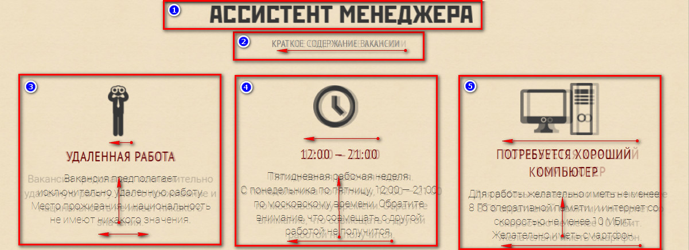
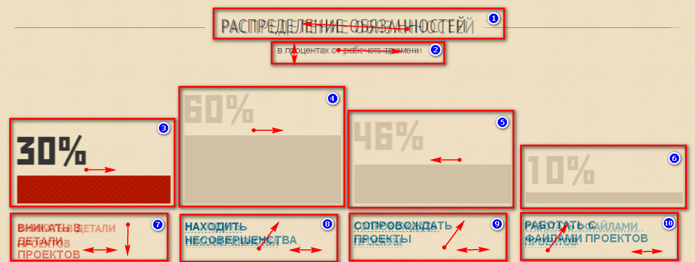
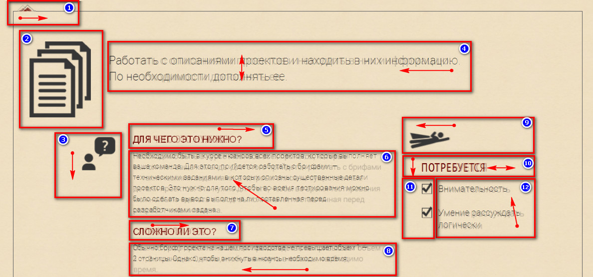
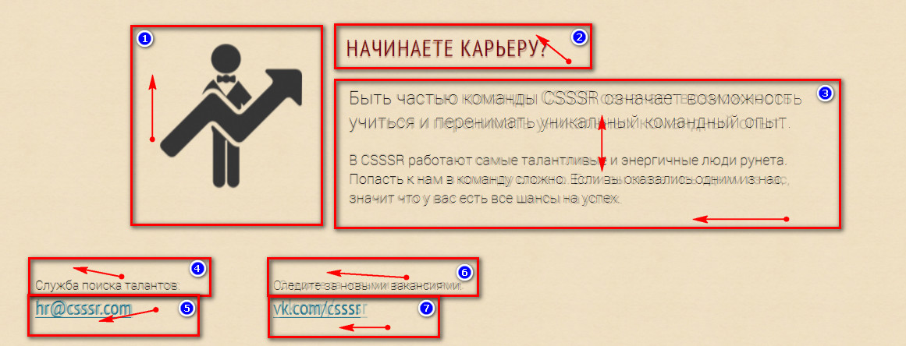
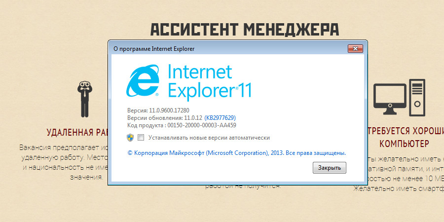
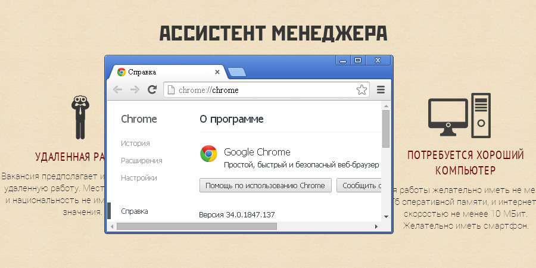
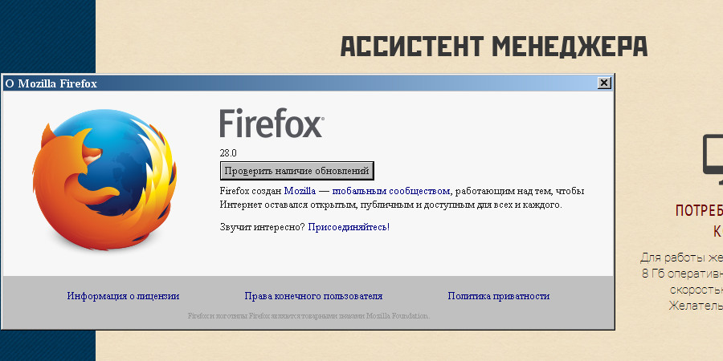
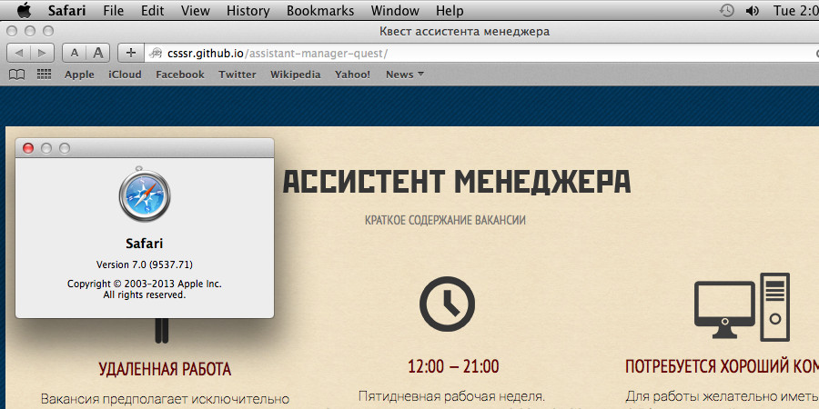

Как компьютерный задрот 80-го lvl'а, не смог равнодушно пройти мимо вакансии на Хантим =)
Ошибки
1. В макете
146% улыбнули
2. В тексте
"Для работы желательно иметь не менее 8 Гб оперативной памяти, и интернет со скоростью не менее 10 МБит."
Скорость не может быть просто 10 МБит. Это не скорость, а пропускная способность тогда уже. Чтобы 10 МБит стали скоростью, надо указать время, за которое эти самые 10 МБит преодолевают свои электронные беговые дорожки. То есть, следовало бы написать 10 МБит/с.
В русском языке нет слова "прийдется", есть "придётся".
Очепятка в слове "станадрт".
"В CSSSR налажено конвейерное производство проектов. Мы не обычная вебстудия. В среднем за месяц мы выпускаем в 10 раз больше проектов, чем любая веб-студия полного цикла."
С этими новомодными словами всё сложно, согласен. Но в одном абзаце писать "вебстудия" и слитно, и через дефис как-то не комильфо.
3. На странице квеста
Описания ошибок для удобства выделены в отдельные блоки, которые представлены ниже:
01 - header
02 - requirements
03 - info
04 - footer
Кликнув по соответствующей картинке, вы увидите список всех багов, которые мне удалось обнаружить.
N.B. На скриншотах полупрозрачный макет проглядывает на фоне страницы квеста.
Вроде шрифт на странице квеста тот же, что и в макете (PT Sans), но смотрится всё намного хуже. Лично для меня читаемость упала просто на порядок: всё какое-то тоненькое, узенькое и бледненькое. Периодически приходилось реально щуриться, чтобы разобрать написанное. В общем, глаза сильно напрягались, хотя текста там - фиг да нефига. Так что я бы однозначно советовал как-то решать вопрос с читабельностью шрифта: как минимум кегль увеличить или толщину (font-weight) нарастить.
Мне кажется, что страница смотрелась бы лучше, если бы контент был отцентрирован.
Раз уж в ТЗ упомянуты всякие мелкомониторные девайсы, стоило бы заморочиться с адаптивным дизайном.
В блоке "Requirements" при переключении вкладок числа с процентами (в некоторых браузерах) плавно изменяют цвет на чёрный. Происходит это одновременно с заполнением красным паттерном столбика под соответствующими цифрами. Так вот, у всех чисел одинаковое время изменения цвета, но столбики окрашиваются с разной скоростью (чем меньше столбик, тем быстрее он целиком закрашивается). В случае с "60%" и даже "46%" время изменения цвета чисел примерно совпадает со временем заполнения столбиков под ними. Но для "30%" (и уж тем более "10%") изменения цвета заметно запаздывают - по сравнению с заливкой паттерном. Мне кажется, что смотрелось бы куда лучше, если бы время заливки паттерном столбика совпадало со временем изменения цвета числа над ним.
N.B. Плавное изменение цвета текста не работает в Firefox 28,
О себе
О себе писать много не стану. Просто перечислю качества, которые вы сможете юзать в своё удовольствие:
Перфекционист (жена даже запрещает намазывать бутерброды перед посиделками, ибо знает, что они будут идеальные, но через трое суток. Но идеальные. Но через трое суток...).
Зануда (могу дотошно и въедливо выяснять причины заусениц и шероховатостей, которые не заметны окружающим).
Почётный граммарнаци, кавалер ордена буквы "Ё" (русский филолог по образованию, если это никого не смущает).
Терпение прокачано тоже некисло. Могу ковырять что-то сутки напролёт. Но только пока не надоест.
Ответственный, как пионер. Если за что-то берусь, во что бы то ни стало довожу дело до конца (знали бы Вы, как это мешает жить!).
Лёгок в общении.
Педант.
Ну и качества, которые могут подпортить малину, тоже не поленюсь отметить:
Однотипные занятия надоедают крайне быстро. Скуку - терпеть ненавижу.
Я очень негативно воспринимаю панибратское отношение и затрапезный тон. А хамство - просто не перевариваю. Могу вспылить. И даже послать. При всей моей вежливости и толерантности.
Иногда меня зарубает на шутки юмора. Благо дело, не часто.
Очень не люблю дедлайны. Когда просят что-то сделать "на вчера", хочется напиться, выкурить два грамма гашиша - и застрелиться... А когда вспоминаю, что уже не пью, гашиш закончился, а стреляться не из чего, настроение... в общем, обидно, нет слов. А без слов, гашиша или - накрайняк - именного маузера я чувствую себя почти голым. Отчего резко проявляются защитные механизмы: агрессия или неуместный юморок. Или того хуже.
Смартфон - это не качество, но поскольку у меня его нет, можно смело относить к минусам моей персоны. Равно как и отсутствие 8 Гб оперативы (у меня вообще стоит ХРюшка с трёшкой мозгов).
Ещё неделю назад я ложился спать в 7 утра по Москве. Сейчас график перетянул в режим "голубя", но вообще-то я "сова" со всеми вытекающими.
Память начинает подводить периодически.
header

№2 – надпись «КРАТКОЕ СОДЕРЖАНИЕ ВАКАНСИИ» сдвигается влево
№3... Не обращайте внимание на "странность" скриншота: для вящего удобства он делался с "увеличенной" страницы браузера. Соответственно, разбивка по строкам "поплыла". Но на самом деле на странице квеста с эти всё в порядке =)
Текст в блоке №3 ведёт себя страньше своих собратьев: все строки имеют тенденуию к уже традиционному "ужатию по ширине", кроме третьей сверху строчки, текст в которой - наоборот - в свёрстанном варианте становится "шире" (letter-spacing?).
В секции jobInfo (№3, №4, №5) все div-ы плавно съезжают влево: jobInfo меньше всех, comp – больше всех. Нижняя граница текста в вышеуказанных div-ах сдвигается вверх. Также во всех div-ах текст смещён влево. В div-е №3 подзаголовок «УДАЛЕННАЯ РАБОТА» влево не смешается, но зато ужат - за счёт межбуквенного интервала (letter-spacing), очевидно.
В итоге, в шапке только один элемент находится на своём месте: картинка-надпись «Ассистент менеджера» (№1)
requirements

№1 – заголовок «РАСПРЕДЕЛЕНИЕ ОБЯЗАННОСТЕЙ» - немного сдвигается вверх и влево.
№2 - надпись «в процентах от рабочего времени» - увеличивается в размерах и ползёт вправо.
В секции graphs div-ы №3 и №4 на 1 пиксель сдвинуты вправо. Div №5 – наоборот – влево. Ну и заливка паттерна происходит, как я уже писал, сверху вниз - в отли-чие от требований ТЗ.
В ТЗ сказано, что «столбики с процентами должны заполняться красным паттерном снизу в верх», а заполняются они сверху вниз. Кстати, правильно будет "снизу вверх" =) Ошибок в текстах вообще хватает, но отлавливать их вроде же не входит в квест?
№7 – надпись «ВНИКАТЬ В ДЕТАЛИ ПРОЕКТОВ» разбита на три строчки вместо двух.
№10 – надпись «РАБОТАТЬ С ФАЙЛАМИ ПРОЕКТОВ»: перенос на следующую строку осуществлён после буквы «с», а не слова «файлами».
Шрифт всех надписей-ссылок под блоками с процентами (в секции graphs) увели-чен.
Эффект подчёркивания (border-bottom) во всех надписях под блоками с процен-тами выглядит нелепо: из-за смещения текста подчёркивание то расположено под пустым пространством, то отсутствует под частью текста.
В итоге, единственный «нормальный» элемент в секции graphs – div «10%» (№6).
info

№1 – треугольник-указатель – сдвинут вправо.
№3 – иконка с вопросом – в свёрстанном варианте немного меньше, чем в макете, за счёт чего верхняя граница сдвинута вниз.
Текст в блоке №4 съезжает право, при этом первая строка сдвигается вниз.
Текст в блоках №5 и №7 сдвинут вправо.
Текст в блоке №5 съезжает вверх и влево.
Текст в блоке №8 сдвинут влево.
№9 – иконка супермена – сдвинута влево.
Текст в блоке №10 съезжает вниз и влево + ужат - за счёт межбуквенного интервала (letter-spacing), очевидно.
Во всех чекбоксах (блок №11) можно снять и вновь поставить галочку, кроме трёх случаев: чекбокс «Чувство прекрасного» на вкладках «Находить несовершенства» и «Работать с файлами проектов». А также чекбокс «Внимательность» на вкладке «Сопровождать проекты».
Текст в блоке №12 съезжает вверх и влево.
Если кликнуть на ссылку той вкладки, которая уже открыта, блок в рамке просто становится пустым.
В браузерах Opera 18+, Google Chrome 34 при переключении вкладок, текст блока в рамке на мгновение выглядит чуть более жирным, а затем становится тоньше (заголовки ещё и уже).
В Internet Explorer 11 при переключении вкладок, текст блока в рамке на мгновение представляет собой наслоение из двух вкладок: текущей - и той, на которую переключаюсь.
В итоге, нормально свёрстаны только блоки №2 и №11.
footer

№1 – иконка с человеком и стрелкой – сдвинута вверх.
Текст в блоке №2 съезжает вверх и влево.
Каждый абзац в блоке №3 съезжает влево. Плюс, заметно уменьшается межстрочное расстояние.
Текст в блоках №4 и №6 съезжает вверх и влево.
Текст в блоке №6 съезжает вниз и влево.
Текст в блоке №7 съезжает влево.
Как видим, в футере ни одного «нормального» элемента.
Internet Explorer 11

Странный баг: после "достижения 100500 уровня", чтобы снять или поставить галочку в чекбоксах, приходится кликать несколько раз вместо одинарного нажатия. Мне кажется, баг завязан на то, каким по счёту выходит конкретный клик, т. е. вне зависимости от вкладки в блоке «Info», несколько галочек ставятся/снимаются одним кликом, потом раз 10-15 требуется щёлкать дважды, затем снова достаточно одного клика и т. д.
В блоке "Requirements" не заметил плавного изменения цвета чисел с процентами - при переключении вкладок.
Google Chrome 34

Проблем не наблюдал.
Mozilla Firefox 28

Проблем не наблюдал.
Safari 7

Проблем не наблюдал.
Opera 18+
Специфических проблем (кроме уже описанных) не наблюдал.
Android 4.2 (Chrome)
Запускал андроид под виртуалкой, поэтому не стану утверждать, что на реальном устройстве было бы так же, но снимать и ставить галочку в чекбоксе напротив надписи «Софт для быстрого создания скриншотов» было проблематично. Удавалось это сделать только при условии, что указатель мышки тыкался в самые левые области чекбокса. Если же кликать по центральной области или правее, вместо появления/снятия галочки осуществлялся переход по ссылке на http://app.prntscr.com/ru/.
Пока не переключишься на просмотр полномасштабной версии сайта, блок с черной рамкой почему-то был в этой самой рамке только сверху и справа: нижняя и левая полоски рамки были не видны.
Кстати, на андроиде блок "Requirements" выглядел приличнее, чем на десктопных браузерах: надписи под столбиками с процентами подчёркивались почти правильно, не было разбития на три строки фразы "вникать в детали проектов".